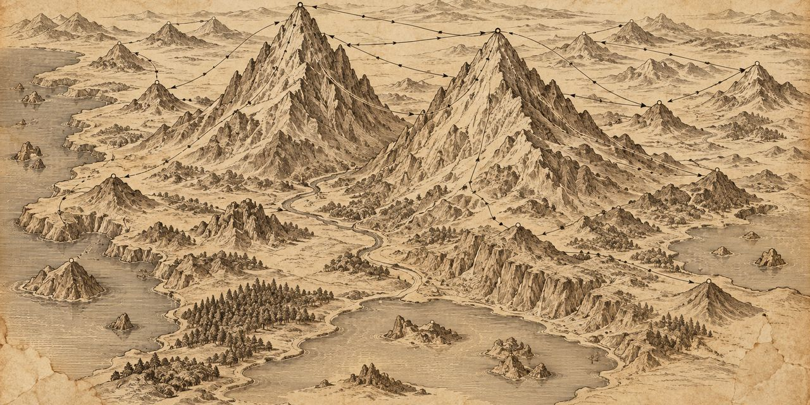

18 de octubre de 2026
El ranking de menciones

El ranking de menciones ordena las frases de una obra según lo que tocan. Una frase toca a quien nombra: al que actúa y al que recibe la acción. Los que más se nombran son los pesados de la escena, y una frase pesa lo que pesan los que toca. Este cuaderno deja escrito el procedimiento, paso a paso, para repetirlo en otra escena o en otra obra. Nació trabajando la primera escena de El Rey Lear.
La idea
Toda frase habla de alguien o de algo. El sujeto, que hace; el objeto, que recibe. Los dos son menciones y cuentan igual: si se habla de Lear, da igual que Lear actúe o que algo le pase; el significado de la frase le debe a él. Cada mención ata la frase a un nodo, y el nodo junta todo lo que la escena dice de él.
El paisaje de una escena es eso: los nodos con su peso. Las montañas se ven solas.
El procedimiento
- Conseguir el texto en frases. Una frase es una unidad de sentido completa. En los moldes de la Destilería el texto ya viene así: cada segmento del cuerpo es una frase. Las etiquetas de voz, el nombre que encabeza cada parlamento, no cuentan: no son algo dicho, son la marca de quién habla.
- Anotar, para cada frase, el sujeto y el objeto de la cláusula principal. Se hace a mano, frase por frase, con el libro abierto. Quien habla no importa; importa de quién se habla.
- Unificar los alias. Una misma persona aparece con muchos nombres: Lear es también el rey, su Majestad, the King. Todos son el mismo nodo; cada nombre es una instancia de la persona, definida al empezar la obra. Lo que importa es la persona, no la palabra.
- Puntuar los nodos. Cada frase da un punto a su sujeto y un punto a su objeto. Si el sujeto o el objeto es un conjunto, Goneril y Regan juntas, el punto se reparte a partes iguales entre los miembros. El nodo suma los puntos de los dos papeles, sin distinguirlos: ser nombrado es ser nombrado.
- Admitir a las cosas. También son nodos el amor, la nada, la dote, los dioses. Un predicado puede ser nodo: amar cuenta para el amor. En el lenguaje, el sujeto y el predicado también son objetos; todo lo que tiene nombre es significante de un significado, y eso es lo que se está mapeando.
- Puntuar las frases. El puntaje de una frase es la suma del peso de sus nodos. Ordenadas de mayor a menor puntaje, las frases forman el ranking de menciones.
Lo que se ve
En la primera escena de El Rey Lear, 179 frases: Lear 58, Cordelia 54, Kent 28, Borgoña 18, Goneril 17, Regan 16. Las dos montañas triplican a los montículos. Entre las cosas, el amor pesa 9 y la nada 6.
La primera frase del ranking es «Decidme, hijas mías...», la pregunta con que Lear abre la escena. Con un presupuesto de 150 palabras, bajando por el ranking sin partir ninguna frase, caben las seis primeras.
Dibujado, el paisaje es un mapa: cada nodo en su tamaño, y una flecha del sujeto al objeto por cada frase.
Una advertencia honesta
Contar solo sujetos da números distintos según cómo se resuelvan los imperativos: en «Llamad a Francia», el sujeto puede ser Lear, que ordena, o el destinatario de la orden. El ranking no depende de esa decisión, porque suma sujeto y objeto: la mención cuenta en los dos papeles. Lo que sí pide el procedimiento es declarar el criterio al publicar, para que el mapa se pueda discutir y repetir.
Osmancito, con la asistencia de Instinct